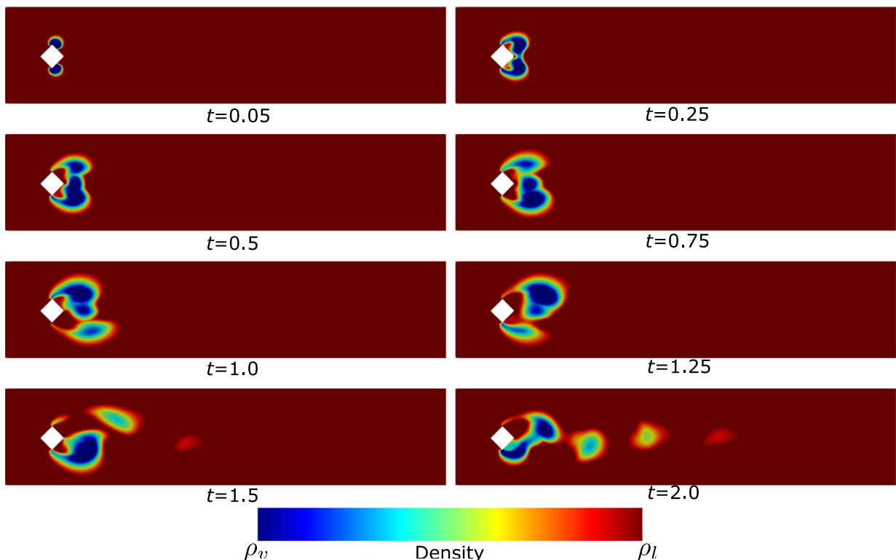
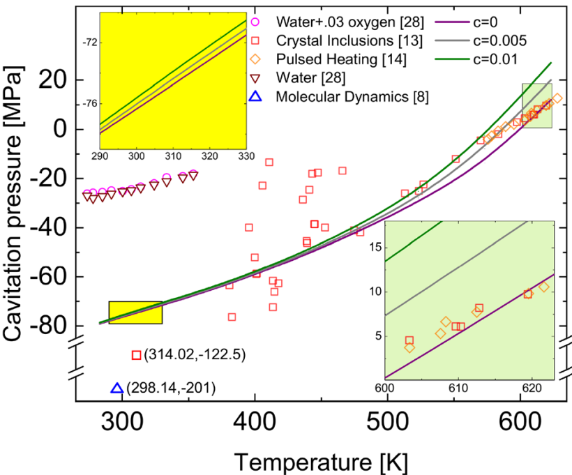
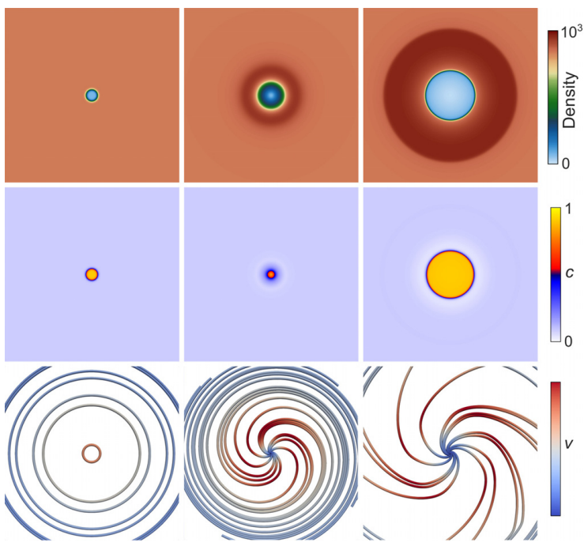
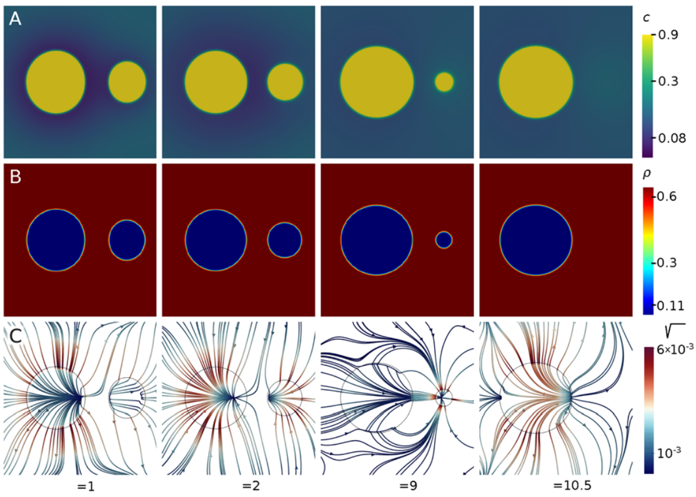

Welcome to Multiphysics Simulation Group
Welcome to the Multiphysics Simulation Group at IIT Kharagpur. Our research operates at the intersection of numerical methods, applied mechanics, thermodynamics and bioprocess engineering. We specialize in developing high-fidelity numerical frameworks to understand complex phenomena, with a particular interest in applications such as delivery systems for next-generation therapeutics and hydrodynamic cavitation. Our mission is to bridge fundamental physics with scalable engineering solutions to address challenges in healthcare, advanced manufacturing and energy.
News
Lab Members
Principal Investigator
Publications
-
 Hydrodynamic cavitation with non-condensable gases: A thickened interface method with differentiable non-equilibrium thermodynamics based on van der Waals theory2025 Journal of Computational Physics, p.114070. DOI Link
Hydrodynamic cavitation with non-condensable gases: A thickened interface method with differentiable non-equilibrium thermodynamics based on van der Waals theory2025 Journal of Computational Physics, p.114070. DOI Link -
 Mechanistic modeling of lipid nanoparticle formation for the delivery of nucleic acid therapeutics2025 Biotechnology Advances, p.108643. DOI Link
Mechanistic modeling of lipid nanoparticle formation for the delivery of nucleic acid therapeutics2025 Biotechnology Advances, p.108643. DOI Link -
 Impinging jet mixers: A review of their mixing characteristics, performance considerations, and applications2025 AIChE Journal, 71(1), p.e18595. DOI Link
Impinging jet mixers: A review of their mixing characteristics, performance considerations, and applications2025 AIChE Journal, 71(1), p.e18595. DOI Link -
 Mixtures of phase transforming fluids and gases: Phase field model and stabilized isogeometric discretization2024 Computers and Fluids, p.106176. DOI Link
Mixtures of phase transforming fluids and gases: Phase field model and stabilized isogeometric discretization2024 Computers and Fluids, p.106176. DOI Link -
 Phase-Field Modeling for Flow Simulation2023 In Frontiers in Computational Fluid-Structure Interaction and Flow Simulation: Research from Lead Investigators Under Forty 2023 (pp. 79-117). Cham: Springer International Publishing. DOI Link
Phase-Field Modeling for Flow Simulation2023 In Frontiers in Computational Fluid-Structure Interaction and Flow Simulation: Research from Lead Investigators Under Forty 2023 (pp. 79-117). Cham: Springer International Publishing. DOI Link -

Stabilized formulation for phase-transforming flows with special emphasis on cavitation inception2023 Computer Methods in Applied Mechanics and Engineering, 415, p.116228. DOI Link -

Effect of dissolved gas on the tensile strength of water2022 Physics of Fluids, 34(12), p.126112. DOI Link -

Understanding how non-condensable gases modify cavitation mass transfer through the van der Waals theory of capillarity2020 Applied Physics Letters, 117(20), p.204102. DOI Link -

Flow and mixing dynamics of phase-transforming multicomponent fluids2019 Applied Physics Letters,115(10), p.104101. DOI Link -
 Molecular Dynamic Study of Boiling Heat Transfer Over Structured Surfaces2018 Journal of Heat Transfer, 140(5). DOI Link
Molecular Dynamic Study of Boiling Heat Transfer Over Structured Surfaces2018 Journal of Heat Transfer, 140(5). DOI Link
-
Mixing within Confined Impinging Jet Mixers: Innovations in Monitoring for Novel Applications2024 In 2024 AIChE Annual Meeting. AIChE.
-
Mechanistic Modeling Strategies for Lipid Nanoparticle Production2024 In 2024 AIChE Annual Meeting. AIChE.
-
Understanding cavitation mass transfer at different scales2021 In APS Division of Fluid Dynamics Meeting Abstracts (pp.N01-053).
-
How Non Condensable gases modify phase change mass transfer2020 APS Division of Fluid Dynamics Meeting Abstracts, J11.00009.
-
Flow and mixing dynamics of phase transforming multicomponent fluids2019 APS Division of Fluid Dynamics Meeting Abstracts, S23.002.
-
Development of Molecular Microscope for Boiling Heat Transfer: A Numerical Study2016 6th International and 43rd National Conference of Fluid Mechanics and Fluid Power, Allahabad, December 15-17, 2016.
Join Our Lab
We are actively seeking PhD applicants to join our research group and contribute. Prospective students should first explore our website and publications to identify specific themes that align with their long-term academic goals. Once you have identified a potential area of focus, please send an introductory email to saikat@mech.iitkgp.ac.in with the subject line “PhD Application – [Your Name] – [Specific Research Topic].” In your email, please provide a concise summary of your research background and attach a CV in PDF format. Please note that the Department of Mechanical Engineering at IIT Kharagpur accepts rolling applications for PhD positions throughout the year, allowing highly motivated candidates to apply at any time.
We are always looking for motivated students to join our research efforts and contribute to our ongoing projects. If you are interested in working with us, please begin by exploring our website to identify 1–2 specific topics that align with your academic interests and career goals. Once you have a clear idea of which areas excite you most, please send an email to saikat@mech.iitkgp.ac.in with the subject line "Research Inquiry: [UG/Master's/Postdoc] – [Your Name]." In your message, provide a brief introduction including your major and current year of study, and explain why the specific topics you identified are a good fit for your skills and interests. Please ensure you attach a current copy of your CV in PDF format so we can better understand your background. We review inquiries on a rolling basis and look forward to hearing how you can contribute to our lab’s mission.